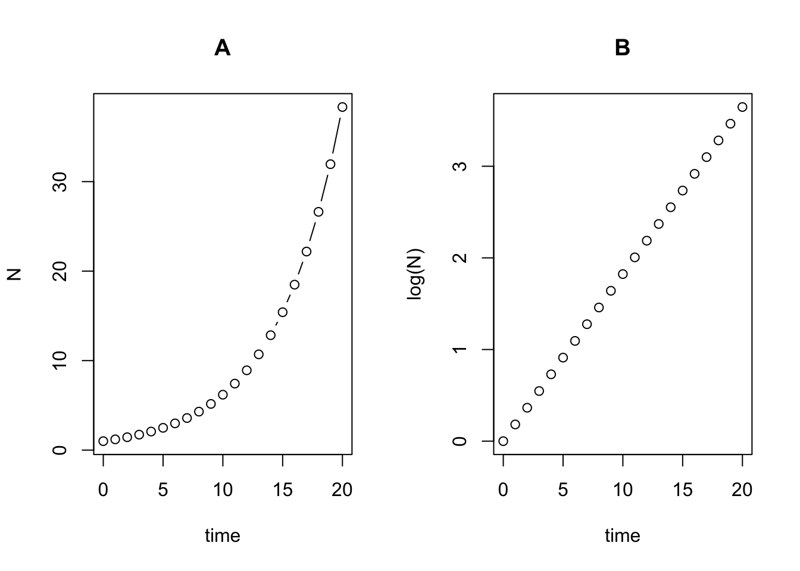
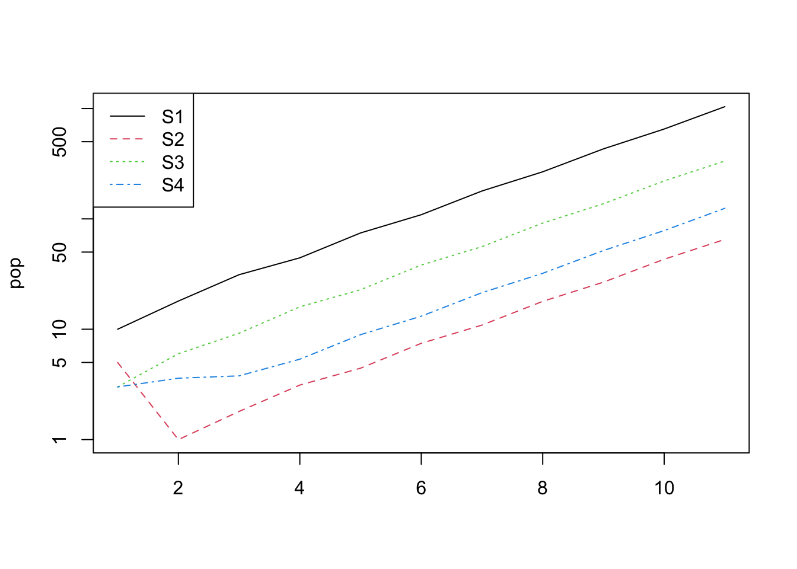

19 Exponential growth in detail
19.1 Discrete time model
We’ll first look at discrete population growth, which is the population growth that is considered to grow over distinct time steps (e.g., 1 year intervals). This is also called Geometric Population Growth.
A population at time \(t\) has size \(N\): \(N_t\).
After one time interval, there will be some births (\(B\)), and some deaths (\(D\)). Births will have the effect of increasing the population size at time \(t+1\) while deaths will decrease population size. The population at the next time step (\(N_{t+1}\)) is thus:
eqn. 1. \(N_{t+1} = N_t + B - D\)
We can think about the birth/death processes on a per-individual basis, and use per-capita birth rate (\(b\)) and per-capita death rate (\(d\)). We can think of \(b\) as the average number of offspring produced by an individual during the time interval starting at \(N_t\) and ending at \(N_{t+1}\). Similarly, \(d\) is the probability that an individual alive at \(N_t\) will die at some point during the interval.
The total number of births within a time interval depends on the number of individuals there are at the start of the interval (\(N_t\)), and the total number of births in the population during the time interval is \(bN_t\). Similarly, the total number of deaths is \(dN_t\). Thus:
eqn. 2. \(N_{t+1} = N_t + bN_t - dN_t\).
This equation can be simplified to:
eqn. 3. \(N_{t+1} = N_t + (b-d)N_t\).
Furthermore, because the expression \((b-d)\) is important, we can give it its own symbol, \(R\). \(R\) is called the per capita rate of increase or the intrinsic rate of increase. (Note that the nomenclature varies depending on the book/paper! In other places this is called \(r_d\), or \(R_m\)).
So we now have:
eqn. 4. \(N_{t+1} = N_t + RN_t\).
Or, if we are only interested in the change in population size:
eqn. 5. \(\frac{\Delta N}{\Delta t} = RN_t\).
Equation 4 can be simplified again, by factoring out the \(N_t\) on the right hand side:
eqn. 6. \(N_{t+1} = (R + 1)N_t\).
The quantity \((R+1)\) is given its own symbol: \(\lambda\), the population multiplication rate (also known as the “finite rate of increase”).
eqn. 7. \(N_{t+1} = \lambda N_t\).
By rearranging this equation (eqn. 7) we can see that \(\lambda\) is simply the ratio of population size at time \(t+1\) and \(t\):
eqn. 8. \(\lambda = N_{t+1}/N_t\).
It follows, therefore, that when the population is neither growing nor declining (when \(N_{t+1}=N_t\)), \(\lambda = 1\) (and when \(R\) = 0).
19.1.1 Calculating N for any future time point
Assuming the population growth rate remains constant, we can calculate the population at any time in the future.
As a starting point, consider equation 7: \(N_{t+1} = \lambda N_t\).
If we want to calculate \(N_{t+2}\), we would need to plug in \(N_{t+1}\) instead of \(N_t\): \(N_{t+2} = \lambda N_{t+1}\),
and, since we know that \(N_{t+1} = \lambda N_t\),: \(N_{t+2} = \lambda \lambda N_t\).
Similarly, if we wanted to calculate \(N_{t+2}\), we’d end up with: \(N_{t+3} = \lambda \lambda \lambda N_t\).
This can be simplified by raising \(\lambda\) to a suitable power, and using the starting population at time = 0, \(N_0\):
eqn. 9. \(N_{t} = \lambda ^tN_0\).
This should be familiar to those of you that did (or remember!) the concept of geometric series which was covered in MM554 Mathematics for Biology.
19.1.2 Applying the model
If we plot exponential growth on a log scale we can see that it is straight line. For example, in the plot below I show the sequence for a population with a starting population of 1 and a \(\lambda\) (population multiplication rate) of 1.2 (i.e., the population increases by 20% each year). In (A) the time series is plotted on the natural scale while in (B) it is plotted on the log scale.

In fact, we can linearise the relationship by log transforming both sides of equation 9:
\(\ln{N_t} = \ln(\lambda ^tN_0)\),
which can be re-written as:
\(\ln{N_t} = \ln(\lambda )t + \ln(N_0)\).
This looks familiar. Indeed, the equation of a straight line (\(y = ax + b\)) maps onto this. In this equation, the slope \(a\) is equivalent to \(\ln(\lambda )\) and the intercept (\(b\)) is equivalent to \(\ln(N_0)\).
This is very convenient because now we can use simple regression methods to estimate \(\ln(\lambda)\) (the slope) of the relationship, and therefore the value of \(\lambda\) (or \(R\), which is \(\lambda -1\)).
Here’s an example from the Neal text book, breeding pairs of merlin (Falco columbarius).:
df1 <- data.frame(year = 1970:1982, N = c(1,1,2,4,2,3,5,6,7,10,12,14,16))
plot(df1$year,df1$N, type = "b")
I’ll re-plot the data on a log scale then fit a regression model and add the line to the plot:
##
## Call:
## lm(formula = logN ~ year, data = df1)
##
## Residuals:
## Min 1Q Median 3Q Max
## -0.32858 -0.13684 -0.01967 0.10104 0.60054
##
## Coefficients:
## Estimate Std. Error t value Pr(>|t|)
## (Intercept) -464.77072 36.12270 -12.87 5.66e-08 ***
## year 0.23596 0.01828 12.91 5.48e-08 ***
## ---
## Signif. codes: 0 '***' 0.001 '**' 0.01 '*' 0.05 '.' 0.1 ' ' 1
##
## Residual standard error: 0.2466 on 11 degrees of freedom
## Multiple R-squared: 0.9381, Adjusted R-squared: 0.9324
## F-statistic: 166.6 on 1 and 11 DF, p-value: 5.478e-08
The summary of the model tells us that the slope of the relationship between year and logN is 0.2359637. Therefore, \(R\) (per capita growth rate) is 0.236 and \(\lambda\) (population multiplication rate) is 1.236.
19.2 Continuous time model
In the discrete time model, the finite rate of increase The starting point for this model is
\(r = ln(\lambda)\) which is the same as saying \(r = ln(N_{t+1}/N_t)\)
We say that \(r = ln(\lambda)\) “r is the natural log of lambda”.
To back-transform from a natural log, we use the exponential. Therefore, \(\lambda = e^r\): “lambda is the exponential of r”.
From the section above, we know that \(\lambda = 1 + R\), so:
\(1+R = e^r\)
\(R = e^r - 1\)
19.2.1 Zero population growth
When the population is steady, \(r = 0\) and \(\lambda = 1\). Note that this relationship, that \(\lambda\) is \(r+1\), only applies when population is not growing: Do not make the common mistake to think that \(\lambda\) is simply \(r + 1\)!
19.2.2 Nomenclature
| Symbol | Meaning | Alternatives |
|---|---|---|
| \(R\) | Per capita rate of increase, per capita population growth rate | \(R_m\) (Neal), \(r\) (Gotelli), \(r_c\) is used as the \(R\) estimated from a life table in Neal |
| \(r\) | Intrinsic rate of increase | \(r_m\) |
| \(\lambda\) | Population growth rate, population multiplication rate | |
| \(R0\) |